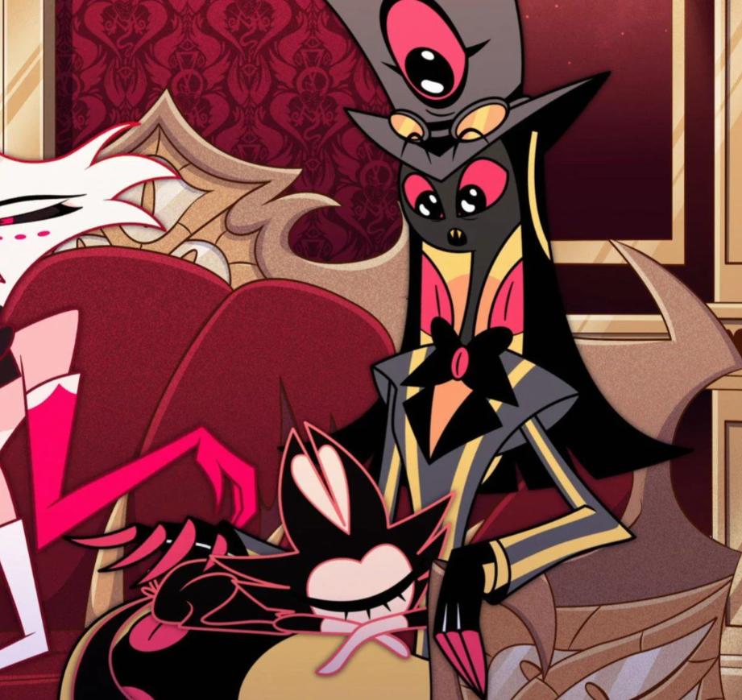
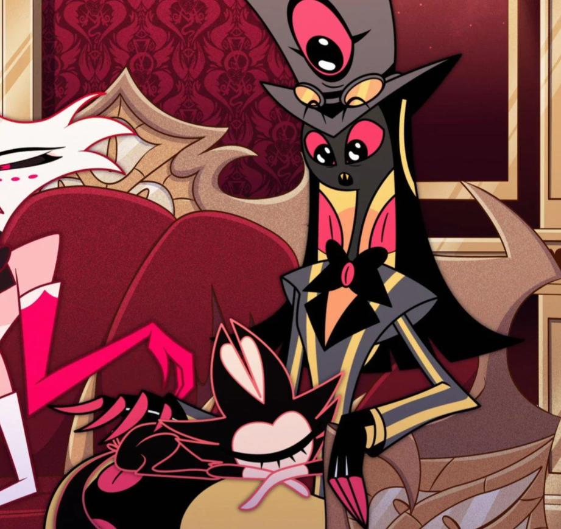

⛧ Sir Pentious je vášnivý vynálezce, který žil ve Viktoriánské Anglii. Byl Voxem nastrčen do Hazbin Hotelu jako špeh. Ihned byl však prokouknut, ale zůstal v Hotelu jako host. Nakonec se z něj stal úspěšný případ polepšení a víc už jeho příběh nebudu spoilovat, protože obsahuje spoustu zásadních zlomů hehe (i když ta písnička u Cherri to spoiluje za mě, pardon. Je prostě moc dobrá). Je zamilovaný do své úhlavní nepřítelkyně Cherri Bomb.
⛧ "♪ Who could forgive a dirtbag like me? I don't deserve your amnesty. ♪"
⛧ Více informací zde!